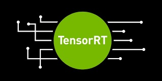
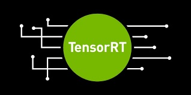

| Technical Specifications & Necessary Peripherals |
|---|
| GPU | 128-core Maxwell |
| CPU | Quad-core ARM A57 @ 1.43 GHz |
| Memory | 4 GB 64-bit LPDDR4 25.6 GB/s |
| Storage microSD | Micro SD 128GB |
| Video Encode | 4K @ 30 | 4x 1080p @ 30 | 9x 720p @ 30 (H.264/H.265) |
| Video Decode | 4K @ 60 | 2x 4K @ 30 | 8x 1080p @ 30 | 18x 720p @ 30 (H.264/H.265) |
| Camera | 2x MIPI CSI-2 DPHY lanes |
| Connectivity | Gigabit Ethernet, M.2 Key E |
| Display | HDMI and display port |
| USB | 4x USB 3.0, USB 2.0 Micro-B |
| Others | GPIO, I2C, I2S, SPI, UART |
| Mechanical | 69 mm x 45 mm, 260-pin edge connector |
| WiFi | Dual Bands - Intel 8265AC 8265NGW with wires and antenna |
| Case | B01 metal case |
| Fan | Standard Fan for Jetson Nano |
| Power | 5V Charger |
| Keyboard | Standard |
| Mouse | Standard |
| Monitor | Standard with HDMI cable |


 
